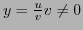
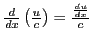
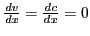

Next: Examples Up: Rules for differentiating standard Previous: Differentiation of a function Contents Index
Let . By the General Rule,
The derivative of a fraction is equal to the denominator times the derivative of the numerator, minus the numerator times the derivative of the denominator, all divided by the square of the denominator.
When the denominator is constant, set in (VII), giving (VIIa) . [Since .] We may also get (VIIa) from (IV) as follows:
All explicit algebraic functions of one independent variable may be differentiated by following the rules we have deduced so far.